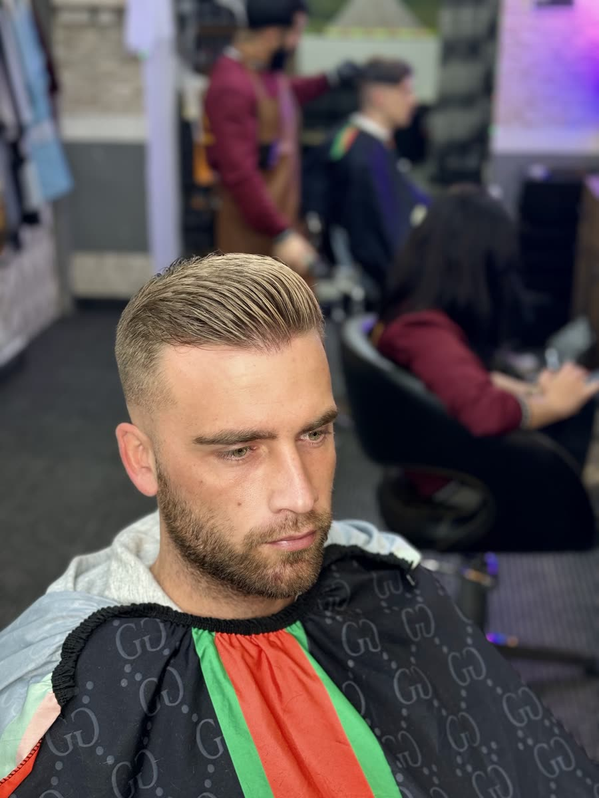
Fade
Strak uitgefaded, met de tijd die het vraagt.
Kapper voor dames en heren in Blankenberge
Knippen, fades en baard, voor dames, heren en kinderen. Met en zonder afspraak, zeven dagen op zeven.
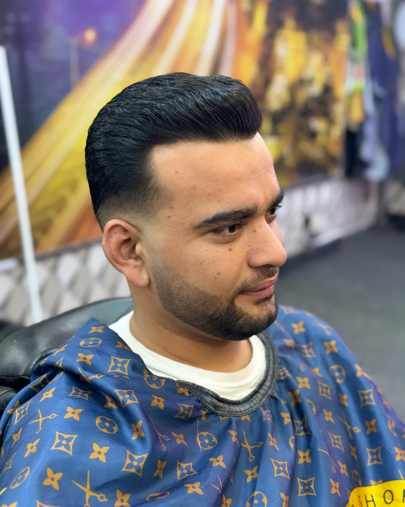
Alle foto’s hieronder zijn klanten van ons, in ons salon.

Strak uitgefaded, met de tijd die het vraagt.
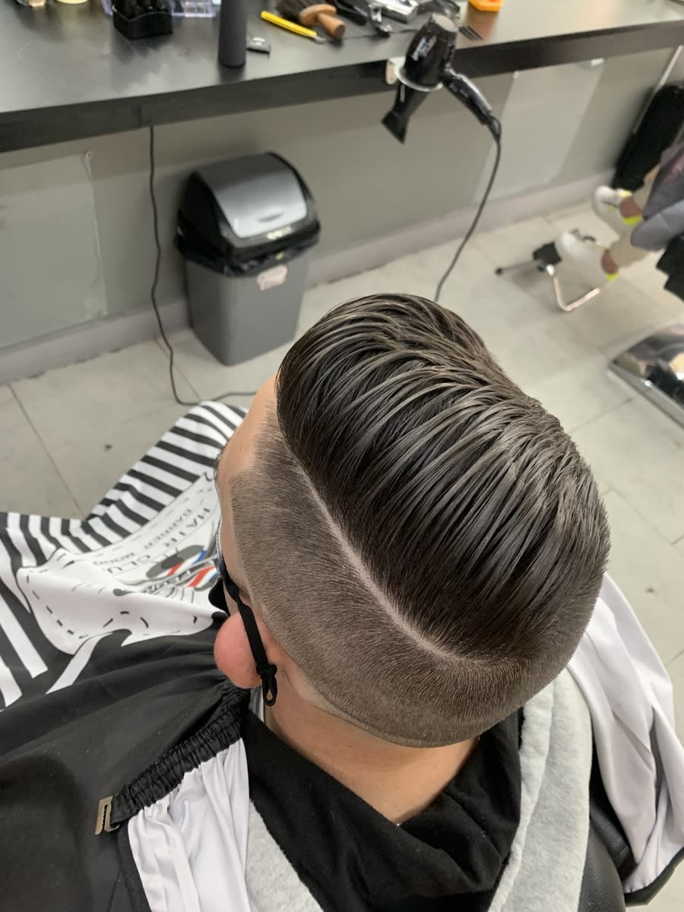
Kort aan de zijkant, volume bovenaan.
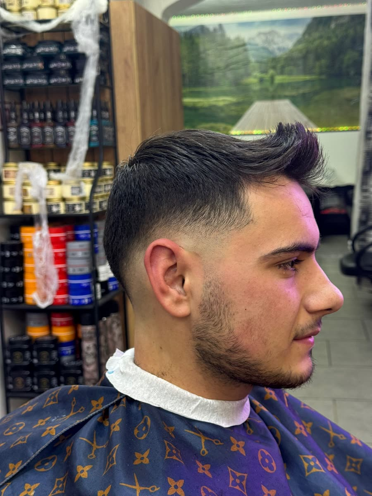
U zegt wat u wil, wij luisteren.
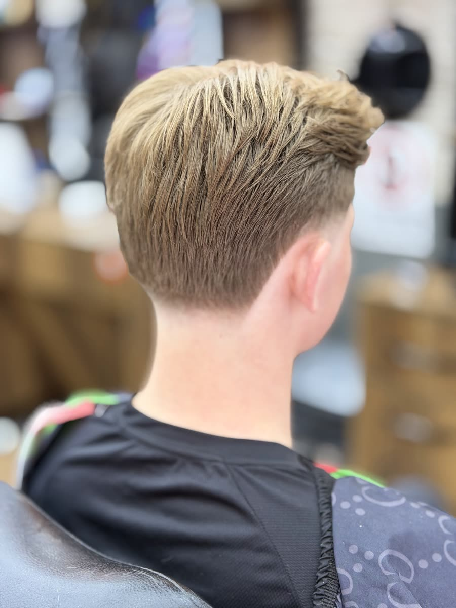
Lang bovenaan, strak in de nek.
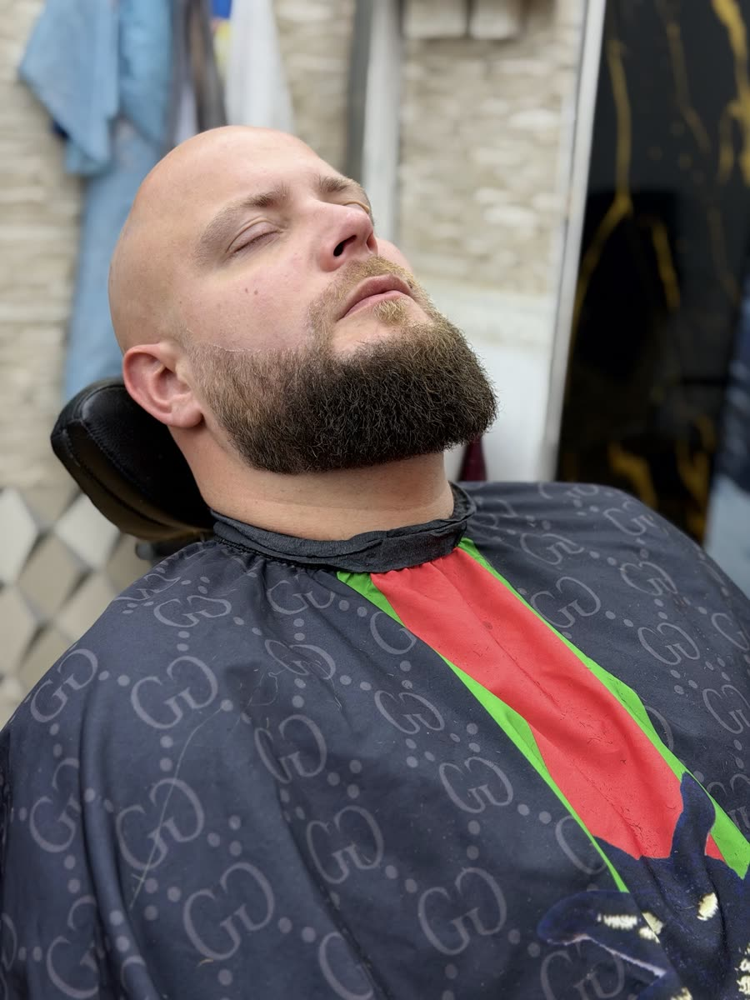
Bijgewerkt en in vorm, met strakke lijnen.
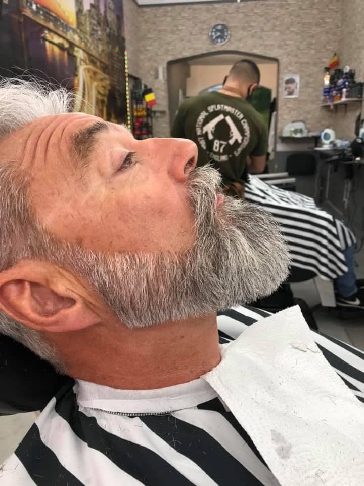
Alles in één beurt.
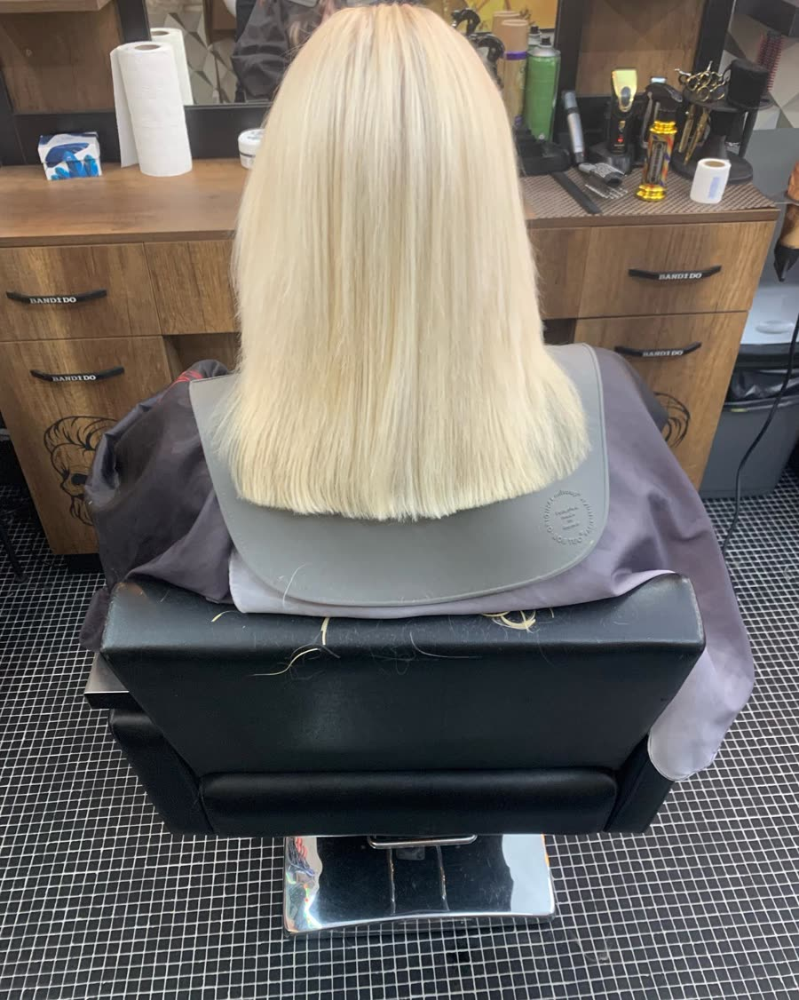
Kleuren en knippen voor dames, in hetzelfde salon.
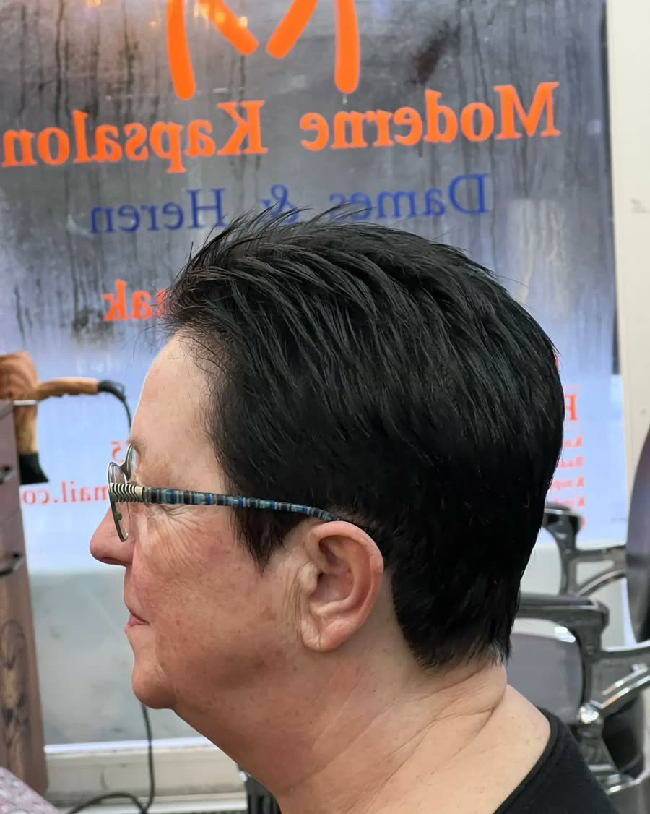
Een korte coupe die makkelijk zit, elke dag.
Vraag naar de prijzen in het salon of aan de telefoon.
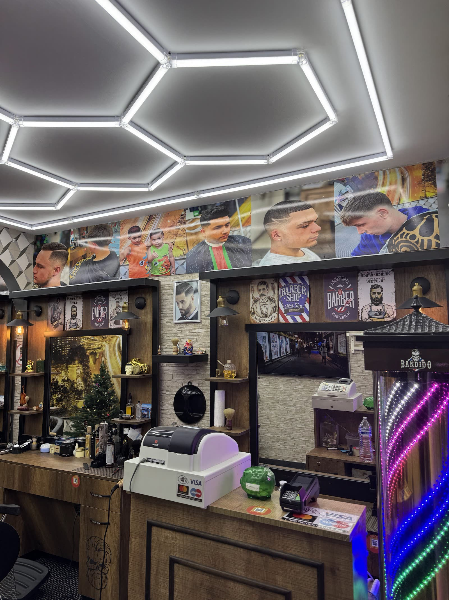
Een team dat zijn vak kent, en tijd voor wie binnenloopt.
Vraag naar de spaarkaart bij uw eerste bezoek. Wie vast komt, wordt beloond.
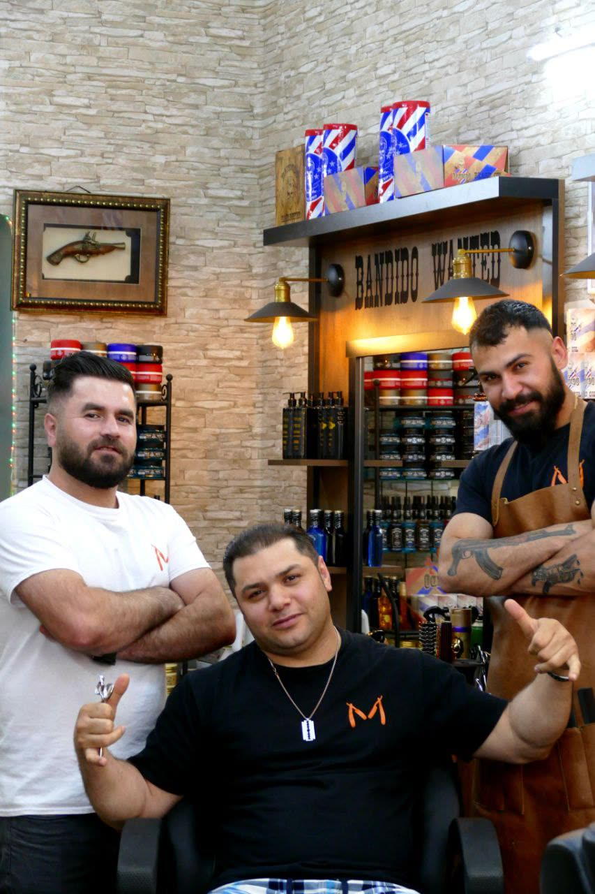
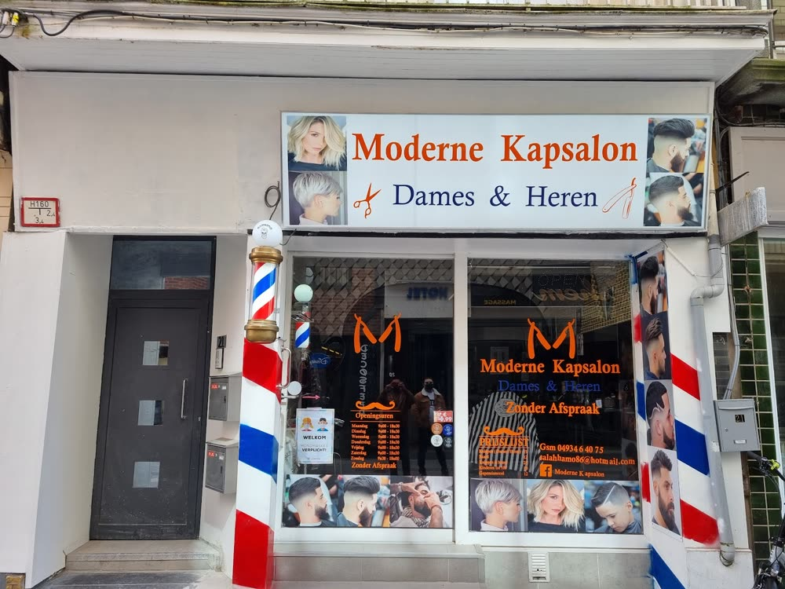
“Ging 1 keer naar hier en sinds dien blijf ik hier! Echt goed. Vriendelijk, proper, niet lang wachten. Zeker een aanrader.”
“Voor de beste fades moet je hier zijn, hij steekt er veel tijd in, en telkens als ik hier kom is alles perfect!”
“Heel vriendelijk, grappig. Is heel goed gelukt, kreeg precies wat ik wou. Echt een aanrader.”